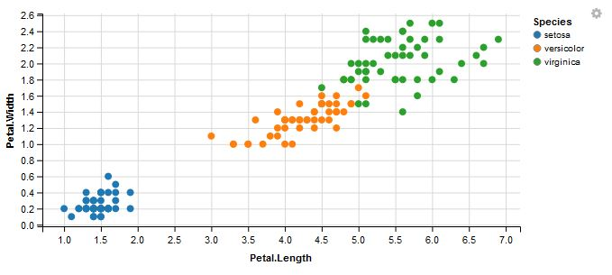
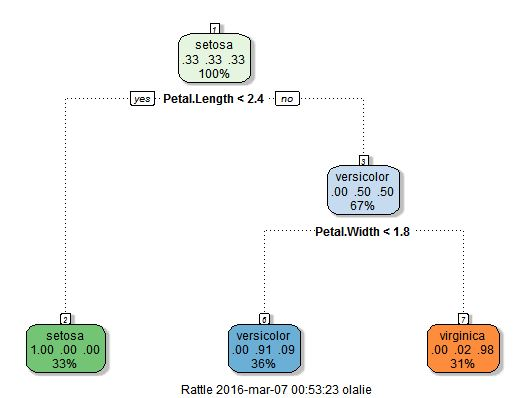
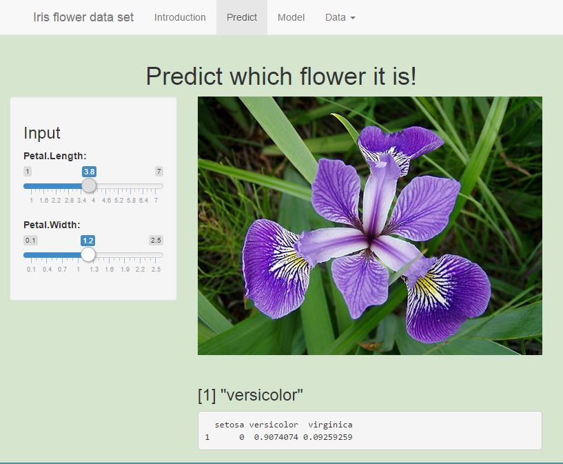

Developing Data Products - Course Project - March 2016 Presented by Ola Lie
## Sepal.Length Sepal.Width Petal.Length Petal.Width Species
## 1 5.1 3.5 1.4 0.2 setosa
## 2 4.9 3.0 1.4 0.2 setosa
## 3 4.7 3.2 1.3 0.2 setosa

| A regression tree may likely be an over-simplification of the true relationship, but it is easier to interpret than other types of regression models, and has a nice graphical representation. |  |
